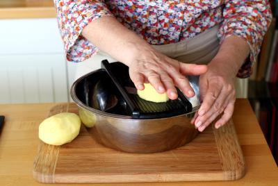
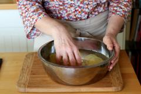
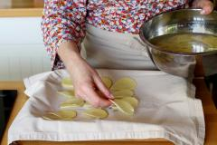
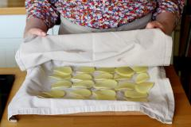
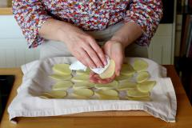
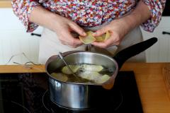
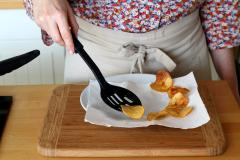
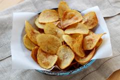

Préchauffez votre four à 200°C. Pelez vos pommes de terre. Coupez-les en tranches très fines (2 mm maximum) puis mettez-les dans un bol.
Remplissez le bol d'eau froide et brassez les rondelles de pommes de terre, tout en faisant couler l'eau. C'est prêt quand l'eau qui sort du bol est bien claire.
Egouttez puis étalez vos rondelles sur un torchon, sans les superposer.
Recouvrez d'un second torchon puis laissez sécher 10 minutes. Versez votre huile dans une cocotte et faites-la chauffer à 170°C.
Essuyez à nouveau chaque rondelle de pomme de terre avec un torchon ou du papier absorbant. C'est important pour avoir des chips bien croustillantes. Etalez les rondelles sur une plaque de cuisson, éteignez votre four puis enfournez le plat. Cela permet de ne pas faire baisser la température du bain de friture quand vous rajoutez de nouvelles rondelles de pommes de terre.
Prélevez une grosse poignée de rondelles de pommes de terre dans le four puis plongez-les dans le bain de friture. Laissez le reste des rondelles dans le four, afin qu'elles restent tièdes. Faites-les cuire pendant 3 à 4 minutes en les brassant de temps à temps à l'aide d'une écumoire. Les chips sont cuites lorsqu'elles sont dorées. Si vous avez l'oreille fine, vous vous rendrez compte que le bain de friture devient au bout d'un moment silencieux. Cela veut dire qu'il ne reste plus d'eau dans les pommes de terre et c'est ce qui va garantir leur croustillant.
Déposez-les au fur et à mesure de leur cuisson sur une assiette recouverte de papier cuisson.
Servez avec de la fleur de sel. Les chips préparées de cette manière restent croustillantes pendant plusieurs heures.
